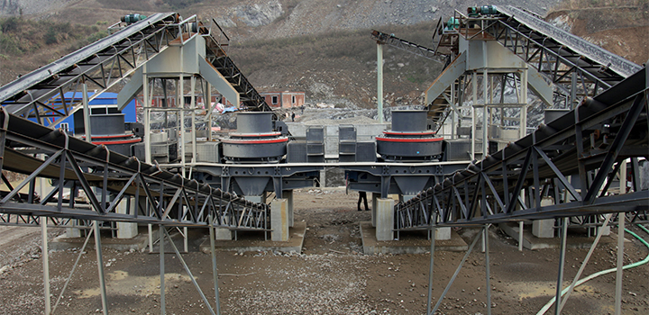

Sand Making Plant Designed by SBM in UAE
Feasibility of the project to manufactured artificial sand making / crushed sand depends up on following points: 1. Rates & availability of natural sand is a basic criteria for feasibility. 2. Cost of river sand is calculated on distance of transportation from riverbed to destination along with royalty (Govt. Fees). If cost of river sand is equal to cost of manufactured sand following points have to be considered: 1. 25% bulk age is to be considered for wet sand. Sieving. Wastage of 25% is to be considered for oversize material. 2. If organic impurities are more than 6%, sand should be washed. Washing cost is not less than Rs. 300.00 for 100 cft. 3. Sand from riverbed i.e. natural source doesn't confirm to IS 383 Grade, as natural manufacturing of sand is stopped because of Dam constructed on every riverbed.
The construction market demand for better aggregate shape and the shortage of natural sand lead the quarry owner to seek a machine that can produce high grade sand. SBM VSI and VSI5X series sand making machine meet global customers' requirements well.
Customer's Background:
A quarry operator in the UAE needed to expand their crushing and screening plant in order to cope with an increasing demand of chip and sand from local market.
Though they already have one primary and a secondary crusher, material comes out from the secondary crusher are mostly above 20mm. While, the new demand of customers is 0-5mm; 5-10mm; 10-20mm (total 3 products), the existing plants can not meet the newest requirements well.
Lay out of sand making machine manufacturing plant is similar to Stone crushing plant. It consist of Feeding hopper, sand Screen, conveyors/ elevators, electrical prime movers and controls, etc. For manufacturing sand at large scale it is manufactured directly from bigger size stones up to 500 mm size. This bigger stones should be crushed to minus 8 mm for feeding.
Sand Making Plant Designed by SBM in UAE Show

Equipment installed:


Services
Supply the most current design and technical expertise;Supply parts sales and training service far beyond the initial sale;Your profits with quality parts and expert service.
+86-21-58386189,58386176 sbm@stoneminingmachine.com Fax: +86-21-58385681
Products
Contact SBM
+86-21-58386189，58386176
sbm@stoneminingmachine.com
Fax: +86-21-58385681
Office Add: No.416 Jianye Road, South Jinqiao Area,Pudong New Area, Shanghai, China.
Postcode: 201201